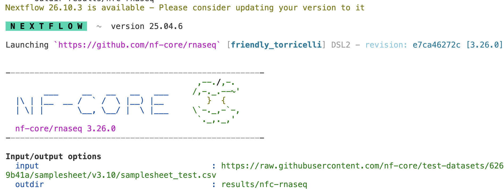

Running an nf-core Nextflow pipeline – part I
Week 11 – Lecture B
![]()
1 Before we get started
In this lecture and the next, we will cover how you can run a bioinformatics pipeline written in the Nextflow language and developed as part of the nf-core initiative. On this page, we’ll introduce nf-core pipelines and do a test run, and in part II, we’ll run the pipeline on the Garrigós et al. (2025) RNA-seq data.
1.1 Learning goals
Specifically, you will learn:
- Why you may want to use pipelines like those made by the nf-core initiative
- What the nf-core rnaseq pipeline does, and when you would want to use it
- How to do a test run of a pipeline
- The difference between general Nextflow options and pipeline-specific options
- How to change Nextflow settings with a configuration file
- How to interpret the progress log and output files of a pipeline run
- How to restart a Nextflow pipeline run using the
-resumeoption
1.2 Getting ready
If you no longer have the VS Code session from Lecture A running:
At https://ondemand.osc.edu, start a VS Code session in
/fs/ess/PAS3493/people/$USER, with 4 cores (you’ll need these for the pipeline’s test run).In your VS Code terminal, go to your working dir for this week:
cd week11
2 nf-core pipelines and the rnaseq pipeline
2.1 Why run (nf-core) pipelines?
In week 10, we talked about managing complex bioinformatics workflows, and the advantages that formal Workflow Management Systems like Nextflow (Di Tommaso et al. 2017) have over DIY pipelines based on e.g. shell scripts.
While you can use Nextflow to build your own workflows from scratch, we will here cover how to run an existing Nextflow pipeline from the “nf-core” initiative (Ewels et al. 2020). This is worth covering for two reasons:
- Available nf-core pipelines cover many types of omics data, so you may well be able to use one for your research.
- Running such a pipeline is a bit different and more involved than running a typical piece of bioinformatics software. But when you know how to run one nf-core pipeline, it will be relatively straightforward to run others as well.
Here are the most popular nf-core pipelines — we will run rnaseq here:

2.2 The nf-core rnaseq pipeline
The nf-core rnaseq pipeline is meant for RNA-seq datasets like the one from Garrigós et al. (2025), where reads are aligned to a reference genome to produce gene-level counts1.
The inputs of this pipeline are FASTQ files with raw reads, and reference genome files (assembly & annotation), while the outputs include a gene count table that can be used for downstream differential expression analysis, and many “QC outputs”. Let’s take a closer look at the key steps in the pipeline — click on the image below to make it larger:

Stage 1: Read QC and pre-processing
- Read QC (FastQC)
- Adapter and quality trimming (TrimGalore or fastp)
- Optional removal of contaminants (BBSplit) and rRNA (SortMeRNA) — off by default, but we will include the latter
Stage 2: Alignment & quantification
- Alignment to the reference genome/transcriptome (STAR)
- Gene expression quantification (Salmon)
Stages 3 and 4: Post-processing, QC, and reporting
- Post-processing alignments: sort, index, mark duplicates (samtools, Picard)
- Alignment/count QC (RSeQC, Qualimap, dupRadar, Preseq, DESeq2)
- Create a QC/metrics report (MultiQC)
Here’s a sketched overview of the main steps involved (as seen in week 4):

This pipeline is quite flexible and you can turn several steps off, add optional steps, and change individual options for most tools that the pipeline runs.
- Optional removal of contaminants (BBSplit)
Map to 1 or more additional genomes whose sequences may be present as contamination, and remove reads that map better to contaminant genomes. - Alternative quantification routes
- Use RSEM instead of Salmon to quantify.
- Skip STAR and perform direct pseudo-alignment & quantification with Salmon.
- Transcript assembly and quantification (StringTie)
While the pipeline is focused on gene-level quantification, it also assembles and quantifies transcripts with StringTie. This is run by default, but can be turned off.
2.3 Overview of running an nf-core pipeline
Here are some key aspects of running the nf-core rnaseq pipeline (and other nf-core pipelines) at OSC:
We only need access to an installation of Nextflow. The pipeline runs all its constituent tools (FastQC, STAR, Salmon, etc.) via separate Apptainer containers that it will download for us.
We can run the pipeline with a single command,
nextflow run [...]. For our real run, the resulting main Nextflow process will submit many Slurm batch jobs for us, and orchestrate these until the pipeline has finished or failed. Because the pipeline can run for many hours, we will submit the main process as a batch job too.Nextflow distinguishes between a final output dir and a “work dir” (by default,
work). All jobs run and produce outputs in sub-dirs of the work dir, and only a selection of their output files are copied to the final output dir2.Nextflow pipelines can be restarted using the
-resumeoption, which will make them rerun only what is needed.
3 Test-run the rnaseq pipeline
3.1 Introduction and setup
All nf-core pipelines can be test-run with a small test dataset that the pipeline will download for you. Let’s perform such a test run to become familiar with the command syntax and the pipeline’s progress log and outputs.
Unlike our real run later on, we will run this test interactively, directly in our VS Code terminal, and Nextflow will not submit Slurm batch jobs. Instead, it will run all steps “locally”, on the compute node that our VS Code session runs on — which is why we asked for 4 cores for this session. This is a handy shortcut for a quick test run with a tiny dataset, but not the way to run a pipeline on real data.
mkdir testrun
cd testrun3.2 Load the Nextflow module
We’ll use Nextflow via the following OSC module:
module load nextflow/25.04.6We use a module here because Nextflow itself needs to submit Slurm jobs and run Apptainer containers, which is awkward from inside a container, where the sbatch and apptainer commands aren’t available. The alternative is to use a Conda environment for Nextflow, but since a module is available at OSC, we will use that.
As of the day before this lecture (Nov 3, 2026), a newer Nextflow module is available at OSC (26.10.4).
This didn’t give me enough time to test the pipeline with this version, but if you run Nextflow/nf-core pipelines later, like for your final project or your own research, you may want to use this newer version.
For example, we had to use a slightly older version of the rnaseq pipeline with the older Nextflow version. When you use the newer Nextflow version, you will be able to use the latest version of the pipeline too.
3.3 Create a configuration file
The pipeline runs each tool in an Apptainer container that it downloads for us. To save time and storage space, we’ll use a shared dir with containers that I already downloaded. We’ll tell Nextflow about this dir in a configuration (config) file.
Config files contain settings for how Nextflow runs a pipeline, such as where to store containers and how to run jobs. The simplest way to override default settings is to create a file called nextflow.config in the dir from which you run the nextflow run command: Nextflow will automatically detect and use such a file.
Create the config file:
touch nextflow.configOpen the newly created
nextflow.configfile in the VS Code editor and paste the following into it.nextflow.config
apptainer.cacheDir='/fs/ess/PAS3493/share/nxf-containers'Here, we only changed the container cache dir, but in part II, we’ll add a few more settings to make Nextflow submit Slurm batch jobs.
3.4 Starting the test run
Next, we’ll run the test as follows:
- The
nextflowcommand has several subcommands, and we use therunsubcommand to run a pipeline. - The pipeline to run is the argument to
nextflow run, here:nf-core/rnaseq3. We don’t need to install the pipeline: Nextflow will download its code from GitHub for us. - The
-roption specifies the pipeline version to use. - The
-profileoption specifies which “profile(s)” to use:testtells the pipeline to use its small test datasetapptainertells the pipeline to run software via Apptainer containers
- The
--outdiroption specifies the final output dir for the pipeline. - The
--skip_qcoption skips most QC steps, which makes this test run a lot faster.
nextflow run nf-core/rnaseq \
-r 3.26.0 \
-profile test,apptainer \
--outdir results/nfc-rnaseq \
--skip_qc# [The output of this command is shown in the next section.]-) vs. pipeline-specific (--) options (Click to expand)
As you may have noticed, some options have a single dash and others a double dash. This is because nextflow run commands distinguish between two kinds of options:
- General Nextflow options always have a single dash (
-). They control how Nextflow runs the pipeline: e.g., which pipeline version and profile(s) to use, and whether to resume a previous run. - Pipeline-specific options always have a double dash (
--). They set the pipeline’s inputs and outputs, and customize which steps will be run and how (larger pipelines can have 100+ of these).
Always specify a version: this makes your run reproducible, and you’ll need to report it in your methods. Without -r, which version is used depends on what Nextflow downloaded previously, and isn’t recorded in your code.
3.5 The test run’s progress log
Since we ran the nextflow run command directly in the terminal, logging output (standard out and standard error) will be printed to the screen. And there’s a lot of it!
The box below has the first part of the expected output, until the pipeline starts running its first jobs (as you can see, all the inputs from the test dataset will be downloaded from GitHub).
Click here to see the initial log output
Nextflow 26.10.3 is available - Please consider updating your version to it
N E X T F L O W ~ version 25.04.6
Launching `https://github.com/nf-core/rnaseq` [friendly_torricelli] DSL2 - revision: e7ca46272c [3.26.0]
------------------------------------------------------
,--./,-.
___ __ __ __ ___ /,-._.--~'
|\ | |__ __ / ` / \ |__) |__ } {
| \| | \__, \__/ | \ |___ \`-._,-`-,
`._,._,'
nf-core/rnaseq 3.26.0
------------------------------------------------------
Input/output options
input : https://raw.githubusercontent.com/nf-core/test-datasets/626c8fab639062eade4b10747e919341cbf9b41a/samplesheet/v3.10/samplesheet_test.csv
outdir : results/nfc-rnaseq
Reference genome options
fasta : https://raw.githubusercontent.com/nf-core/test-datasets/626c8fab639062eade4b10747e919341cbf9b41a/reference/genome.fasta
gtf : https://raw.githubusercontent.com/nf-core/test-datasets/626c8fab639062eade4b10747e919341cbf9b41a/reference/genes_with_empty_tid.gtf.gz
gff : https://raw.githubusercontent.com/nf-core/test-datasets/626c8fab639062eade4b10747e919341cbf9b41a/reference/genes.gff.gz
transcript_fasta : https://raw.githubusercontent.com/nf-core/test-datasets/626c8fab639062eade4b10747e919341cbf9b41a/reference/transcriptome.fasta
additional_fasta : https://raw.githubusercontent.com/nf-core/test-datasets/626c8fab639062eade4b10747e919341cbf9b41a/reference/gfp.fa.gz
hisat2_index : https://raw.githubusercontent.com/nf-core/test-datasets/626c8fab639062eade4b10747e919341cbf9b41a/reference/hisat2.tar.gz
salmon_index : https://raw.githubusercontent.com/nf-core/test-datasets/626c8fab639062eade4b10747e919341cbf9b41a/reference/salmon.tar.gz
Read filtering options
bbsplit_fasta_list : https://raw.githubusercontent.com/nf-core/test-datasets/626c8fab639062eade4b10747e919341cbf9b41a/reference/bbsplit_fasta_list.txt
UMI options
umitools_bc_pattern : NNNN
umi_discard_read : 0
Alignment options
pseudo_aligner : salmon
Quality Control
kraken_db : https://raw.githubusercontent.com/nf-core/test-datasets/eb0cbf73c3f103f8aeda9878ba200e92b4d045d8/data/genomics/sarscov2/genome/db/kraken2.tar.gz
Process skipping options
skip_bbsplit : false
Institutional config options
config_profile_name : Test profile
config_profile_description : Minimal test dataset to check pipeline function
Generic options
trace_report_suffix : 2026-10-25_13-05-46
Core Nextflow options
revision : 3.26.0
runName : friendly_torricelli
containerEngine : apptainer
container..*PARABRICKS_STARGENOMEGENERATE: community.wave.seqera.io/library/htslib_samtools_star_gawk:4de2f983041d42e6
launchDir : /fs/ess/PAS3493/people/jelmer/week11/testrun
workDir : /fs/ess/PAS3493/people/jelmer/week11/testrun/work
projectDir : /users/PAS0471/jelmer/.nextflow/assets/nf-core/rnaseq
userName : jelmer
profile : test,apptainer
configFiles : /users/PAS0471/jelmer/.nextflow/assets/nf-core/rnaseq/nextflow.config
!! Only displaying parameters that differ from the pipeline defaults !!
------------------------------------------------------
* The pipeline
https://doi.org/10.5281/zenodo.1400710
* The nf-core framework
https://doi.org/10.1038/s41587-020-0439-x
* Software dependencies
https://github.com/nf-core/rnaseq/blob/master/CITATIONS.md
WARN: ~~~~~~~~~~~~~~~~~~~~~~~~~~~~~~~~~~~~~~~~~~~~~~~~~~~~~~~~~~~~~~~~~~~~~~
Both '--gtf' and '--gff' parameters have been provided.
Using GTF file as priority.
~~~~~~~~~~~~~~~~~~~~~~~~~~~~~~~~~~~~~~~~~~~~~~~~~~~~~~~~~~~~~~~~~~~~~~~~~~~~
WARN: ~~~~~~~~~~~~~~~~~~~~~~~~~~~~~~~~~~~~~~~~~~~~~~~~~~~~~~~~~~~~~~~~~~~~~~
'--transcript_fasta' parameter has been provided.
Make sure transcript names in this file match those in the GFF/GTF file.
Please see:
https://github.com/nf-core/rnaseq/issues/753
~~~~~~~~~~~~~~~~~~~~~~~~~~~~~~~~~~~~~~~~~~~~~~~~~~~~~~~~~~~~~~~~~~~~~~~~~~~~After that, the log shows one line for each process (i.e., step) in the pipeline, which runs one or more jobs4:
- On the right (scroll right to see this), you can see each step’s progress:
1 of 1 ✔and5 of 5 ✔mean that all of the step’s jobs have finished. The check mark (✔) means that they did so successfully, while a cross (✖) would indicate that a job failed.2 of 5means that 5 jobs have been submitted for the step, of which 2 have finished.0 of 2means that the step has started (2 jobs have been submitted), but none of its jobs have finished yet.- A dash (
-) means that the step hasn’t started yet.
- The number of jobs differs between steps:
- Steps that process each sample separately have one job per sample:
5 of 5in the test dataset. - Steps that only need to run once, like preparing the reference genome, have a single job:
1 of 1.
- Steps that process each sample separately have one job per sample:
- The hexadecimal string at the start of each line (e.g.,
[a5/06472a]) identifies one of that step’s jobs (the most recently submitted one), and the dir in which that job ran.
executor > local (29)
[6b/1cecd9] NFCORE_RNASEQ:PREPARE_GENOME:GUNZIP_GTF (genes_with_empty_tid.gtf.gz) [100%] 1 of 1 ✔
[f7/9413a8] NFCORE_RNASEQ:PREPARE_GENOME:CUSTOM_GTFFILTER (genes_with_empty_tid.filtered) [100%] 1 of 1 ✔
[f1/6ca0de] NFCORE_RNASEQ:PREPARE_GENOME:GUNZIP_ADDITIONAL_FASTA (gfp.fa.gz) [100%] 1 of 1 ✔
[38/a41513] NFCORE_RNASEQ:PREPARE_GENOME:CUSTOM_CATADDITIONALFASTA (genome_transcriptome) [100%] 1 of 1 ✔
[4e/47e489] NFCORE_RNASEQ:PREPARE_GENOME:EAUTILS_GTF2BED (genome_gfp) [100%] 1 of 1 ✔
[63/c4489b] NFCORE_RNASEQ:PREPARE_GENOME:SAMTOOLS_FAIDX (genome_gfp.fasta) [100%] 1 of 1 ✔
[b4/886567] NFCORE_RNASEQ:PREPARE_GENOME:BBMAP_BBSPLIT (null) [100%] 1 of 1 ✔
[da/47c581] NFCORE_RNASEQ:PREPARE_GENOME:STAR_GENOMEGENERATE (genome_gfp.fasta) [100%] 1 of 1 ✔
[b3/c2208a] NFCORE_RNASEQ:PREPARE_GENOME:UNTAR_SALMON_INDEX (salmon.tar.gz) [100%] 1 of 1 ✔
[- ] NFCORE_RNASEQ:RNASEQ:SAMTOOLS_INDEX -
[b2/ff25b4] NFCORE_RNASEQ:RNASEQ:FASTQ_QC_TRIM_FILTER_SETSTRANDEDNESS:CAT_FASTQ (WT_REP1) [100%] 2 of 2 ✔
[4f/cf83f6] NFCORE_RNASEQ:RNASEQ:FASTQ_QC_TRIM_FILTER_SETSTRANDEDNESS:FQ_LINT (WT_REP1) [100%] 5 of 5 ✔
[a5/06472a] NFC…M_FILTER_SETSTRANDEDNESS:FASTQ_FASTQC_UMITOOLS_TRIMGALORE:TRIMGALORE (WT_REP1) [100%] 5 of 5 ✔
[18/548909] NFC…Q:RNASEQ:FASTQ_QC_TRIM_FILTER_SETSTRANDEDNESS:FQ_LINT_AFTER_TRIMMING (WT_REP1) [100%] 5 of 5 ✔
[8d/14fa31] NFC…:RNASEQ:FASTQ_QC_TRIM_FILTER_SETSTRANDEDNESS:BBMAP_BBSPLIT (RAP1_IAA_30M_REP1) [ 40%] 2 of 5
[- ] NFCORE_RNASEQ:RNASEQ:FASTQ_QC_TRIM_FILTER_SETSTRANDEDNESS:FQ_LINT_AFTER_BBSPLIT [ 0%] 0 of 2
[- ] NFC…EQ:FASTQ_QC_TRIM_FILTER_SETSTRANDEDNESS:FASTQ_SUBSAMPLE_FQ_SALMON:FQ_SUBSAMPLE -
[- ] NFC…EQ:FASTQ_QC_TRIM_FILTER_SETSTRANDEDNESS:FASTQ_SUBSAMPLE_FQ_SALMON:SALMON_QUANT -
Plus 12 more processes waiting for tasks…After some time, the pipeline should finish, hopefully successfully:
[2e/794b4b] NFCORE_RNASEQ:RNASEQ:MULTIQC_RNASEQ:MULTIQC (multiqc_report) [100%] 1 of 1 ✔
-[nf-core/rnaseq] Pipeline completed successfully -
Completed at: 25-Oct-2026 14:08:04
Duration : 11m 7s
CPU hours : 0.6
Succeeded : 162The log only shows as many process lines as fit in your terminal. A line like
Plus 12 more processes waiting for tasks…summarizes the remaining processes that haven’t started yet. These will show up in the log once they do start (and making your terminal taller will show more of them).If the containers hadn’t already been downloaded to the
apptainer.cacheDirdir, you would also see lines about container downloads in the log.If a process line says e.g.
retries: 1, a job failed but succeeded when Nextflow retried it.executor > localmeans that jobs are run on the same node as the main Nextflow process. (That’s fine for this small test run, but for our real data, we will have Nextflow submit Slurm batch jobs instead.)Some steps only run for some samples. For example,
CAT_FASTQconcatenates the FASTQ files of samples that have more than one set of FASTQ files (e.g., from multiple sequencing runs), which is the case for 2 of the samples in the test dataset:2 of 2.
For example:

4 The test run’s output files
4.1 Main output files
The final output files are in the dir we specified. As you can see, there are several sub-dirs with outputs from various steps, and these dirs are named after the tools that produced them:
ls results/nfc-rnaseqbbsplit fastqc fq_lint multiqc pipeline_info salmon star_salmon trimgaloreThe two most important outputs are:
The MultiQC report — this summarizes QC metrics from various steps, such as read trimming and alignment5. The report also lists the versions of each piece of software that was run by the pipeline.
ls -lh results/nfc-rnaseq/multiqc/star_salmon/multiqc_report.html-rw-rw----+ 1 jelmer PAS0471 2.9M Oct 25 14:17 results/nfc-rnaseq/multiqc/star_salmon/multiqc_report.htmlYou’ll take a closer look at this report in part II, but here’s an example screenshot, showing the STAR mapping rate:
The gene count table — this is used for downstream analysis such as differential expression analysis.
ls -lh results/nfc-rnaseq/star_salmon/salmon.merged.gene_counts_length_scaled.tsv-rw-rw----+ 1 jelmer PAS0471 9.7K Oct 25 14:16 results/nfc-rnaseq/star_salmon/salmon.merged.gene_counts_length_scaled.tsvIn the table, genes are in rows and samples in columns, and the values are the gene counts. These aren’t whole numbers, because Salmon estimates counts: for example, it “splits” a read that matches two genes equally well6.
less -S results/nfc-rnaseq/star_salmon/salmon.merged.gene_counts_length_scaled.tsvgene_id gene_name RAP1_IAA_30M_REP1 RAP1_UNINDUCED_REP1 RAP1_UNINDUCED_REP2 WT_REP1 WT_REP2 Gfp_transgene_gene Gfp_transgene_gene 0 0 0 0 0 HRA1 HRA1 0 0 0 0 0 snR18 snR18 2.14802855661586 20.2855969463173 10.1375746973545 5.78423880944934 5.80768605222367 tA(UGC)A TGA1 0 0 0 0 0 tL(CAA)A SUP56 0 0 0 0 0 tP(UGG)A TRN1 0 0 0 1.01841736490118 0 tS(AGA)A tS(AGA)A 1.01850122747957 0 0 0 0 YAL001C TFC3 55.4778408610273 69.9211554832352 113.194248136096 60.4964254842457 30.2692589944609 YAL002W VPS8 36.3459924147924 32.4521250917071 80.5970831288856 63.580635210628 25.2482004816186 YAL003W EFB1 597.978458911117 888.742693215767 1857.82221206273 1049.55203167344 664.701066367987 YAL004W YAL004W 1.0197486986914 0 0 0 1.01797117238891 YAL005C SSA1 6026.86373913046 6077.38491621524 12770.2053957157 7966.04370465683 4143.94126807027

pipeline_info dir (Click to expand)
The pipeline_info dir is useful for documenting your run: it e.g. has a file with all parameter settings that were used, and a file with the versions of all software. When you publish results from the pipeline, cite both the pipeline and the tools it ran: the start of the log shows where to find these citations.
4.2 The work dir
The work dir contains sub-dirs in which all jobs ran, and where they produced their outputs before the pipeline copied a selection of them to the final output dir. Because it contains all outputs, including intermediate files, it is usually much larger than the final output dir. For example, in this case (these sizes can get much larger for real data runs):
du -sh results/nfc-rnaseq/ work48M results/nfc-rnaseq/
264M workYou won’t need to explore the work dir most of the time, but it can be useful for debugging or understanding the pipeline’s behavior and the exact commands that it ran.
Self-study exercise: Explore the work dir of the MultiQC process
In this exercise, you’ll take a look at the work subdir of the pipeline’s final process: MultiQC.
Start by listing the
workdir’s contents:ls work02 07 14 1e 23 2f 3b 47 51 5a 65 6e 78 81 8b 93 9e a5 aa b0 b7 c0 cf d8 e6 ec f7 singularity 03 08 15 1f 24 33 40 4b 52 5b 66 70 7a 82 8c 94 9f a6 ab b1 ba c1 collect-file d9 e8 ed f8 stage-450f1767-7222-43e1-96cd-7d7b2a8a187c 04 0c 17 20 25 37 42 4c 55 5c 69 71 7b 83 8d 95 a1 a7 ad b2 bc c3 d2 db e9 f1 fa tmp 05 0f 1a 21 2c 38 43 4e 56 5d 6a 72 7c 86 90 9a a3 a8 ae b3 bd c6 d3 e2 ea f2 fb 06 11 1d 22 2e 3a 45 4f 59 63 6c 73 80 87 91 9d a4 a9 af b4 bf ce d7 e3 eb f3 ffHow do you find your way around that? 😳 As mentioned above, the hexadecimal code at the start of each line in the log (e.g.,
[2e/794b4b]) points to the subdir of the work dir in which that job ran (every individual job runs in its own dir).Find the line for the MultiQC process in the pipeline’s log, and note its hexadecimal code.
Click for the solution
The line should look like this, though your hexadecimal code will be different (so use the one from your own log in the next steps):
[2e/794b4b] NFCORE_RNASEQ:RNASEQ:MULTIQC_RNASEQ:MULTIQC (multiqc_report) [100%] 1 of 1 ✔List all files in this process’s
worksubdir, including hidden files. Can you tell which are input files, which are output files, and what the hidden files might contain? (Hint: the full name of the subdir is much longer than what’s shown in the log, but you can use a*wildcard to match the rest.)Click for the solution
Use the
-aoption tolsso hidden files are also listed:ls -a work/2e/794b4b*. .command.err .exitcode versions.yml .. .command.log multiqc_config.yml 1 .command.out multiqc_report_data 10 .command.run multiqc_report.html 100 .command.sh multiqc_report_plots 101 .command.begin .command.trace name_replacement.txt # [...Not all files shown...]The files in this
worksubdir include:- Input files (as links/shortcuts, so the files don’t have to be copied in full). Because MultiQC’s inputs come from many jobs and may have the same names, Nextflow puts each input file in its own numbered dir (
1,10,100, etc.). - Output files, such as
multiqc_report.html - Several hidden files, including:
.command.sh: the exact command that was run by this process.command.log: logging information from the process run
- Input files (as links/shortcuts, so the files don’t have to be copied in full). Because MultiQC’s inputs come from many jobs and may have the same names, Nextflow puts each input file in its own numbered dir (
Check exactly how MultiQC was run by the pipeline by looking at the
.command.shfile.Click for the solution
Show the contents of the
.command.shfile:cat work/2e/794b4b*/.command.sh#!/usr/bin/env bash -C -e -u -o pipefail multiqc \ --force \ \ --config 1/multiqc_config.yml --config 2/multiqc_sample_merge.yml \ --filename multiqc_report.html \ \ --replace-names name_replacement.txt \ \ . # [...output truncated...]It can be good to know how exactly a program was run, for example to reproduce the command outside of Nextflow, for your methods section, or for troubleshooting.
work dir location: use Scratch for real data runs
In this case, work is in its default location, the dir from which you execute the nextflow command (i.e., the current working directory). For runs on real data, it’s best to put the work dir elsewhere, typically in /fs/scratch, which is faster and has more space than /fs/ess (we’ll do this in part II).
5 Re-running a pipeline with -resume
When you rerun a pipeline with the -resume option, Nextflow checks for each job whether it was already successfully run before. It does so using a record of previous runs that it keeps in a hidden .nextflow dir. A job is skipped, and its earlier outputs reused, if:
- Its inputs, command, and settings are the same as in the previous run, and
- Its outputs are still present in the
workdir
All other jobs are rerun, along with any downstream jobs that depend on their outputs. This can save a lot of time:
- After a pipeline failed partway through, only the failed jobs and the jobs that depend on them are run.
- After you added samples or changed an input file, only the jobs for those samples or that file are run, plus jobs that combine all samples (like MultiQC).
- After you changed a setting that only affects the very last step, only that step is rerun.
Let’s quickly explore how the -resume option works. We’ll first remove the final output dir, and then re-run the same command as above, but now adding -resume:
# Remove the results dir, so we can see the effect of -resume:
rm -r results
# Rerun the pipeline with -resume:
nextflow run nf-core/rnaseq \
-r 3.26.0 \
-profile test,apptainer \
--outdir results/nfc-rnaseq \
--skip_qc \
-resumeThe run should finish quickly: all jobs had already finished successfully in the previous run, and their outputs are still in the work dir, which we didn’t remove. So, Nextflow reruns few or no jobs, and mostly just copies the final outputs from the work dir to the output dir again.
The process logging should look like this, where cached: 1 ✔ (scroll to the right to see the full line) indicates that the outputs were already present from before, and the job wasn’t actually rerun:
[6b/1cecd9] NFCORE_RNASEQ:PREPARE_GENOME:GUNZIP_GTF (genes_with_empty_tid.gtf.gz) [100%] 1 of 1, cached: 1 ✔
[f7/9413a8] NFCORE_RNASEQ:PREPARE_GENOME:CUSTOM_GTFFILTER (genes_with_empty_tid.filtered) [100%] 1 of 1, cached: 1 ✔
[f1/6ca0de] NFCORE_RNASEQ:PREPARE_GENOME:GUNZIP_ADDITIONAL_FASTA (gfp.fa.gz) [100%] 1 of 1, cached: 1 ✔
[38/a41513] NFCORE_RNASEQ:PREPARE_GENOME:CUSTOM_CATADDITIONALFASTA (genome_transcriptome) [100%] 1 of 1, cached: 1 ✔
[4e/47e489] NFCORE_RNASEQ:PREPARE_GENOME:EAUTILS_GTF2BED (genome_gfp) [100%] 1 of 1, cached: 1 ✔
[63/c4489b] NFCORE_RNASEQ:PREPARE_GENOME:SAMTOOLS_FAIDX (genome_gfp.fasta) [100%] 1 of 1, cached: 1 ✔
[b4/886567] NFCORE_RNASEQ:PREPARE_GENOME:BBMAP_BBSPLIT (null) [100%] 1 of 1, cached: 1 ✔
[da/47c581] NFCORE_RNASEQ:PREPARE_GENOME:STAR_GENOMEGENERATE (genome_gfp.fasta) [100%] 1 of 1, cached: 1 ✔
[b3/c2208a] NFCORE_RNASEQ:PREPARE_GENOME:UNTAR_SALMON_INDEX (salmon.tar.gz) [100%] 1 of 1, cached: 1 ✔
# [...output truncated...]
-[nf-core/rnaseq] Pipeline completed successfully -
Completed at: 25-Oct-2026 14:17:07
Duration : 2m 32s
CPU hours : 0.6 (94.9% cached)
Succeeded : 5
Cached : 157The -resume run is not instantaneous, though, because Nextflow still has to check all jobs and copy the outputs to the final output dir. But it is clearly much faster than the first run, which actually ran all jobs. And for a real data run, the time saved can be hours or days.
You may also notice that not all jobs were cached: in the run above, 157 jobs were cached (Cached: 157), but 5 were rerun (Succeeded: 5). Such “cache misses” happen when Nextflow concludes that a job’s inputs may have changed, even though you didn’t change anything — for example, because a step received files from many jobs in a different order, or because an input file’s last-modified time changed. Downstream jobs that use the outputs of a rerun job are then rerun as well. A few cache misses like this are normal and nothing to worry about.
Exercise 1: What would -resume do?
What if you had instead rerun the pipeline with
-resume, but without--skip_qc?- All jobs would be cached, since the input files didn’t change.
- Most jobs would be cached, but some new jobs would be run.
- The entire pipeline would be rerun, since a setting changed.
Click for the solution
B. Most jobs would be cached, since their inputs, commands, and settings didn’t change. But the QC steps that we skipped in the first run (e.g. Qualimap, RSeQC, and the DESeq2 PCA) would now be run for the first time, and MultiQC would be rerun, because the outputs of these new QC jobs are among its inputs.
What if you had instead removed the
workdir, and keptresults, before rerunning with-resume?- No jobs would be rerun, since the final outputs are still in
results. - Only jobs whose outputs aren’t in
resultswould be rerun. - The entire pipeline would be rerun.
Click for the solution
C. The entire pipeline would be rerun, taking as long as the first run: Nextflow keeps track of finished jobs and their outputs in the
workdir (together with a hidden.nextflowdir in your working dir), and doesn’t look at the final output dir at all. So, keep theworkdir until you’re done with a pipeline run. Conversely, after a successful run, you can remove theworkdir to save space, as long as you won’t need to resume.- No jobs would be rerun, since the final outputs are still in
References
Footnotes
The pipeline also produces transcript-level counts, but these are harder to accurately obtain with short-read data. Additionally, the pipeline only works when a reference genome is available, as it cannot do de novo transcriptome assembly.↩︎
Typically, not all outputs are copied, especially for intermediate steps like read trimming — and pipelines have settings to determine what is copied.↩︎
If we had wanted to run the sarek pipeline, for example, we would use
nf-core/sarekinstead.↩︎Nextflow itself calls these “tasks”, which you’ll see in some of its messages. We’ll call them jobs, because in our real run, each will be a Slurm batch job.↩︎
Because we used
--skip_qc, this test-run report is fairly minimal, but the report of our real run in part II will have lots more, including a gene expression PCA plot.↩︎Additionally, as the file name indicates, the counts in this file have been “length-scaled”: adjusted for differences between samples in the average length of each gene’s expressed transcripts.↩︎